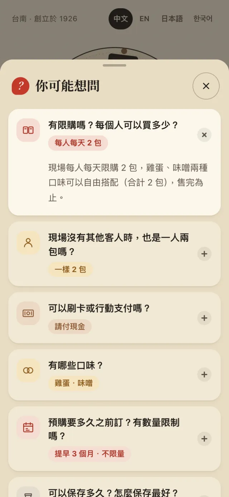

連得堂：給百年煎餅老店的外國遊客導覽網站
外國遊客在門口掃 QR，就能用自己的語言看懂怎麼買、店的故事，再拿點單卡給老闆看。

問題
連得堂從 1926 年起在台南烤雞蛋、味噌煎餅。現場只有兩種口味，每人每天限購 2 包，常常提早賣完。
門口排隊的人裡，常有看不懂告示、也不知道怎麼跟老闆點的外國遊客。店家需要的是在門口就能用、用遊客自己的手機、不用安裝任何東西的工具。
我們做了什麼



- 四種語言，自動選擇中文、English、日本語、한국어，各有自己的網址；手動選過會記住。
- 門口告示翻譯翻譯門口的告示，另外附上可以給店員看的常用句卡。
- 可以互動的百年故事讀者可以按下鐵模壓出煎餅，也可以在歇業那段重新點火。
- 不用 cookie 的使用分析切換語言、打開點單卡、打開常見問題等事件都已埋好，也分得出是不是從立牌掃進來；店家設定 Umami 後就會啟用。
同一頁，四種語言

店名與品名在訪談時逐一定下，例如日文用「玉子せんべい」、韓文用「계란 전병」。
印之前就驗證過的門口立牌
A4、A5 兩種尺寸的印刷 PDF，配色跟網站一致。QR 直接指向網站，不經過會過期的動態 QR 服務。
檔案產生後，腳本會把 QR 縮成三種尺寸各解碼一次，確認掃出來是正確網址。

開發過程
-
開工
查店家資料，三輪訪談定下對象、語言、配色與核心功能。
-
第一版上線
部署到 lengtihtong.vercel.app，之後網址都沒有變。
-
QR 門口立牌
A4、A5 PDF、預覽圖，以及驗證過的 QR code。
-
流程整理成 skill
shop-visitor-site 與 qr-stand，下一間店可以直接用。
-
圖示、故事與常見問題
用程式畫的煎餅圖示依回饋改兩版、四章互動百年故事、四種語言的 8 題常見問題。
-
成果交接
成果總覽 PDF、操作示範影片、截圖、印刷檔、文件與原始碼。
目前進度
這是課程提案作品。網站已經上線，但部分內容根據公開資料撰寫，店家正式採用前還需要老闆確認。
- 請老闆確認待確認清單：付款方式、週日營業、價格與常見問題的擬答。
- 請日文、韓文母語者校對。
- 把非商業授權的資料庫照片，換成店家自己拍的照片。
- 印出立牌，在店門口用幾支不同的手機實際試掃。